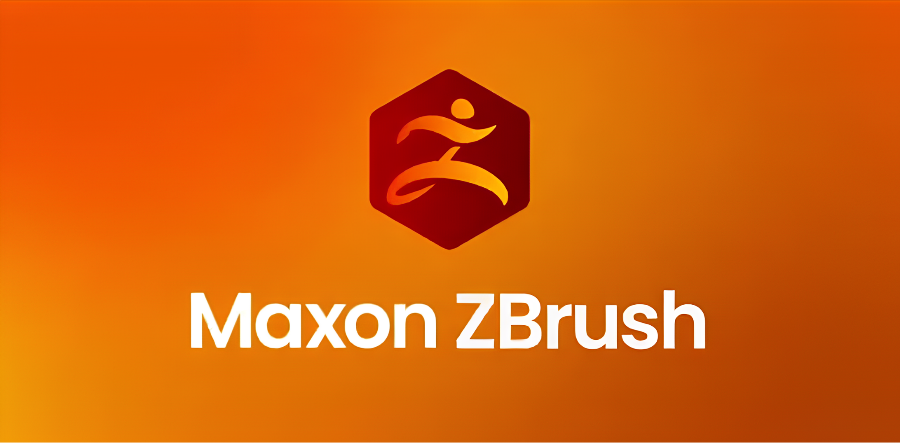
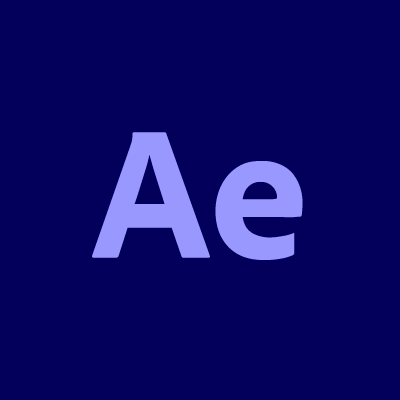
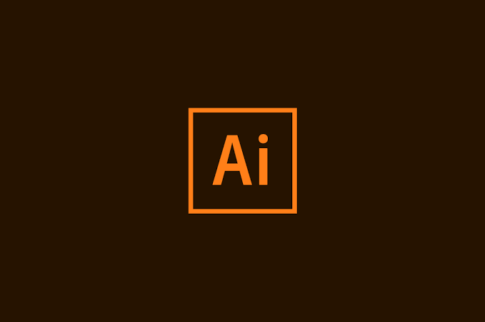
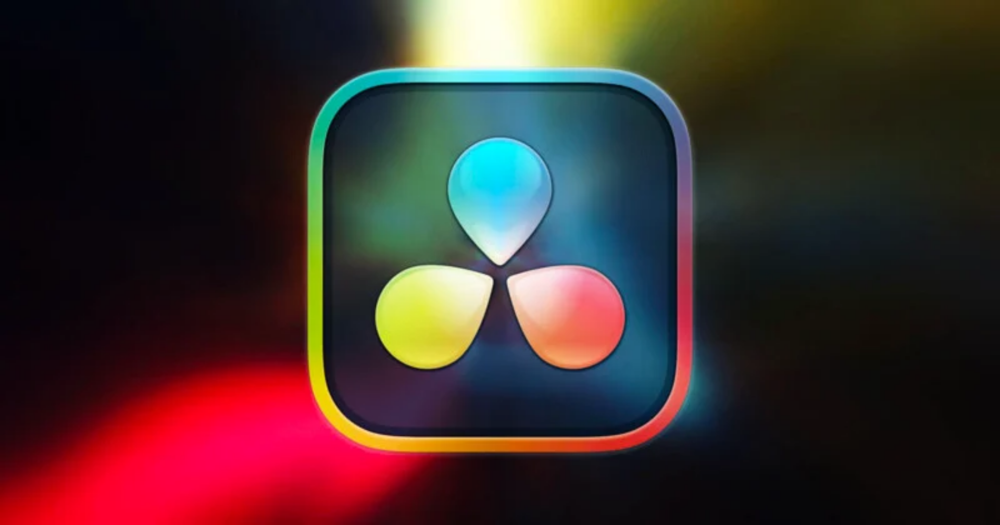
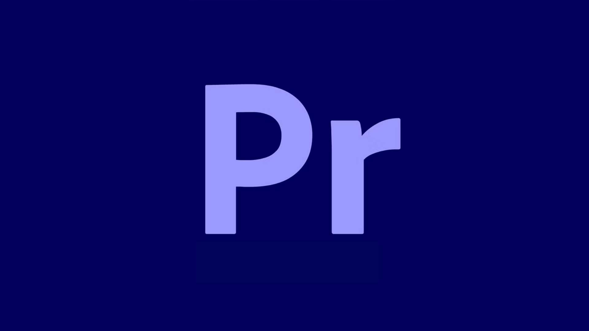
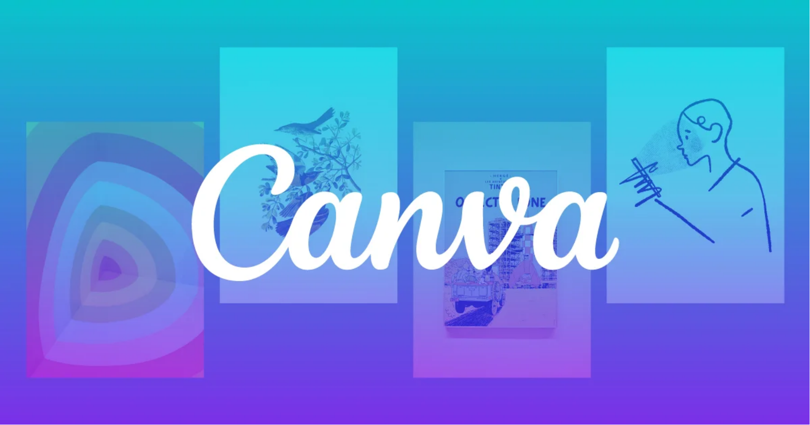

<!DOCTYPE html>
<html lang="es">
<head>
    
    <link rel="stylesheet" href="estilos-pantallas.css">
    
    <meta charset="UTF-8">
    <meta name="viewport" content="width=device-width, initial-scale=1.0">
    <title>Gy Arts - HDMI 1 (Wii Menu - Habilidades)</title>
    
    <style>
        /* Declaración de Fuentes */
        @font-face {
            font-family: 'Chunko';
            src: url('fonts/Chunko Bold Demo.ttf') format('truetype');
        }
        @font-face {
            font-family: 'Teko';
            src: url('fonts/Teko-Regular.ttf') format('truetype');
        }

        * {
            margin: 0;
            padding: 0;
            box-sizing: border-box;
        }

        body {
            background-color: #000; /* Fondo negro exterior para las barras proporcionales */
            color: #F6FFE9;
            font-family: 'Teko', sans-serif;
            font-size: 1.3rem;
            width: 100vw;
            height: 100vh;
            overflow: hidden;
            display: flex;
            justify-content: center;
            align-items: center;
        }

        /* Contenedor Televisor (Dimensiones fijas base para el escalador global) */
        .tv-screen-container {
            width: 1366px;
            height: 768px;
            background-color: #CAC5E5; /* Lavanda de fondo */
            border: 12px solid #F137A6; /* Marco Rosa */
            padding: 20px;
            box-shadow: inset 0 0 50px rgba(0,0,0,0.6);
            outline: 6px solid #F2E0A4; /* Borde Amarillo */
            display: flex;
            flex-direction: column;
            justify-content: space-between;
            position: absolute;
            transform-origin: center center;
        }

        /* BOTÓN REGRESAR EN LA ESQUINA SUPERIOR DERECHA */
        .btn-regresar-home {
            position: absolute;
            top: 25px;
            right: 25px;
            width: 45px;
            height: 40px;
            background: rgba(41, 0, 135, 0.5);
            border: 2px solid #F2E0A4;
            border-radius: 8px;
            color: #F6FFE9;
            font-size: 1.6rem;
            display: flex;
            justify-content: center;
            align-items: center;
            text-decoration: none;
            opacity: 0.5;
            transition: opacity 0.2s ease, transform 0.2s ease;
            z-index: 60;
            cursor: pointer;
            line-height: 1;
        }

        .btn-regresar-home:hover {
            opacity: 0.9 !important;
            transform: scale(1.1);
            background-color: #F137A6;
            color: #F6FFE9;
        }

        /* Encabezado OSD Estilo Wii */
        .wii-header {
            background-color: #290087;
            border: 3px solid #F2E0A4;
            border-radius: 10px;
            padding: 10px 25px;
            display: flex;
            justify-content: space-between;
            align-items: center;
            color: #F6FFE9;
            margin-bottom: 10px;
        }

        .wii-title {
            font-family: 'Chunko', sans-serif;
            font-size: 2rem;
            color: #F2E0A4;
        }

        .wii-time {
            font-size: 1.8rem;
            color: #F6FFE9;
        }

        /* Área Central donde están la parrilla y las flechas */
        .wii-main-area {
            flex: 1;
            position: relative;
            display: flex;
            justify-content: center;
            align-items: center;
            padding: 10px 50px;
            overflow: hidden;
        }

        /* FLECHAS DE NAVEGACIÓN LATERALES */
        .nav-arrow {
            position: absolute;
            top: 50%;
            transform: translateY(-50%);
            width: 38px !important;
            height: 38px !important;
            cursor: pointer;
            opacity: 0.75;
            filter: drop-shadow(0px 2px 4px rgba(41, 0, 135, 0.7));
            transition: opacity 0.2s ease, transform 0.2s ease, filter 0.2s ease;
            z-index: 60;
            user-select: none;
        }

        .nav-arrow:hover {
            opacity: 1 !important;
            transform: translateY(-50%) scale(1.25);
            filter: drop-shadow(0 0 10px #F137A6);
        }

        .arrow-left { left: 8px; }
        .arrow-right { right: 8px; }

        /* Contenedor de Páginas de Canales (3x2) */
        .wii-grid-page {
            width: 100%;
            height: 100%;
            display: grid;
            grid-template-columns: repeat(3, 1fr);
            grid-template-rows: repeat(2, 1fr);
            gap: 20px;
            align-items: center;
        }

        /* Tarjeta de Canal Wii */
        .wii-channel-card {
            background: #ffffff;
            border: 4px solid #290087;
            border-radius: 20px;
            height: 100%;
            display: flex;
            flex-direction: column;
            justify-content: center;
            align-items: center;
            box-shadow: 0 8px 18px rgba(0,0,0,0.2);
            transition: all 0.2s ease;
            position: relative;
            overflow: hidden;
            padding: 0;
        }

        .wii-channel-card:hover {
            transform: scale(1.05);
            border-color: #F137A6;
            box-shadow: 0 0 25px #F137A6, 0 10px 20px rgba(0,0,0,0.3);
        }

        /* Contenedor e Imagen del Logo del Software */
        .channel-logo-container {
            width: 100%;
            height: 100%;
            display: flex;
            justify-content: center;
            align-items: center;
            overflow: hidden;
            position: relative;
        }

        .channel-logo-img {
            width: 100%;
            height: 100%;
            object-fit: cover;
            transition: transform 0.3s ease;
        }

        .wii-channel-card:hover .channel-logo-img {
            transform: scale(1.08);
        }

        /* Etiqueta flotante con el nombre del programa */
        .channel-name-overlay {
            position: absolute;
            bottom: 0;
            left: 0;
            width: 100%;
            background: rgba(41, 0, 135, 0.85);
            color: #F6FFE9;
            font-family: 'Chunko', sans-serif;
            font-size: 1.4rem;
            text-align: center;
            padding: 4px 0;
            border-top: 2px solid #F2E0A4;
            transition: background 0.2s ease;
        }

        .wii-channel-card:hover .channel-name-overlay {
            background: rgba(241, 55, 166, 0.95);
            color: #F6FFE9;
        }

        /* Barra Inferior Estilo Wii */
        .wii-bottom-panel {
            background-color: #290087;
            border: 3px solid #F2E0A4;
            border-radius: 10px;
            padding: 10px 25px;
            display: flex;
            justify-content: space-between;
            align-items: center;
            height: 75px;
        }

        .wii-btn-round {
            width: 50px;
            height: 50px;
            background-color: #CAC5E5;
            border: 3px solid #F2E0A4;
            border-radius: 50%;
            color: #290087;
            font-size: 1.5rem;
            display: flex;
            justify-content: center;
            align-items: center;
            text-decoration: none;
            cursor: pointer;
            transition: all 0.2s ease;
        }

        .wii-btn-round:hover {
            background-color: #F137A6;
            color: #F6FFE9;
            transform: scale(1.1);
        }
    </style>
</head>

<body>
    <div class="tv-screen-container">
        <!-- Todo el contenido de tu página (menús, botones, televisión, descripciones) va aquí adentro -->
    </div>
</body>

<body>

    <div class="tv-screen-container">
        
        <!-- Botón Regresar al canal -->
        <a href="guiaCanales.html" class="btn-regresar-home" title="Volver al Canal">↩</a>

        <!-- Encabezado OSD -->
        <header class="wii-header">
            <div class="wii-title">HDMI 1 - CANALES DE SOFTWARE</div>
            <div class="wii-time" id="clock">12:00 PM</div>
        </header>

        <!-- Área Principal con Flechas y Parrilla -->
        <div class="wii-main-area">
            
            

            <!-- PÁGINA 1 DE CANALES (3x2) -->
            <div class="wii-grid-page" id="page1">
                
                <!-- Krita -->
                <div class="wii-channel-card">
                    <div class="channel-logo-container">
                        
                    </div>
                    <div class="channel-name-overlay">KRITA</div>
                </div>

                <!-- Blender -->
                <div class="wii-channel-card">
                    <div class="channel-logo-container">
                        
                    </div>
                    <div class="channel-name-overlay">BLENDER</div>
                </div>

                <!-- ZBrush -->
                <div class="wii-channel-card">
                    <div class="channel-logo-container">
                        
                    </div>
                    <div class="channel-name-overlay">ZBRUSH</div>
                </div>

                <!-- Unity -->
                <div class="wii-channel-card">
                    <div class="channel-logo-container">
                        
                    </div>
                    <div class="channel-name-overlay">UNITY</div>
                </div>

                <!-- After Effects -->
                <div class="wii-channel-card">
                    <div class="channel-logo-container">
                        
                    </div>
                    <div class="channel-name-overlay">AFTER EFFECTS</div>
                </div>

                <!-- Illustrator -->
                <div class="wii-channel-card">
                    <div class="channel-logo-container">
                        
                    </div>
                    <div class="channel-name-overlay">ILLUSTRATOR</div>
                </div>

            </div>

            <!-- PÁGINA 2 DE CANALES (3x2) -->
            <div class="wii-grid-page" id="page2" style="display: none;">
                
                <!-- Autodesk Maya -->
                <div class="wii-channel-card">
                    <div class="channel-logo-container">
                        
                    </div>
                    <div class="channel-name-overlay">MAYA</div>
                </div>

                <!-- Substance Painter -->
                <div class="wii-channel-card">
                    <div class="channel-logo-container">
                        
                    </div>
                    <div class="channel-name-overlay">SUBSTANCE</div>
                </div>

                <!-- DaVinci Resolve -->
                <div class="wii-channel-card">
                    <div class="channel-logo-container">
                        
                    </div>
                    <div class="channel-name-overlay">DAVINCI</div>
                </div>

                <!-- Premiere Pro -->
                <div class="wii-channel-card">
                    <div class="channel-logo-container">
                        
                    </div>
                    <div class="channel-name-overlay">PREMIERE PRO</div>
                </div>

                <!-- Canva -->
                <div class="wii-channel-card">
                    <div class="channel-logo-container">
                        
                    </div>
                    <div class="channel-name-overlay">CANVA</div>
                </div>

                <!-- VS Code -->
                <div class="wii-channel-card">
                    <div class="channel-logo-container">
                        
                    </div>
                    <div class="channel-name-overlay">VS CODE</div>
                </div>

            </div>

            

        </div>

        <!-- Panel Inferior -->
        <footer class="wii-bottom-panel">
            <a href="guiaCanales.html" class="wii-btn-round" title="Guía EPG">📺</a>
            <span style="font-family:'Chunko'; color:#F2E0A4; font-size:1.4rem;">PAGE <span id="pageNum">1</span> / 2</span>
            <div style="display: flex; gap: 10px; align-items: center;">
                <a href="Contactame.html" class="wii-btn-round" title="Contáctame">📞</a>
                <a href="index.html" class="wii-btn-round" title="Inicio">🏠</a>
            </div>
        </footer>

    </div>

    <!-- Script de reloj, paginación y prueba de extensiones -->
    <script>
        function actualizarReloj() {
            const ahora = new Date();
            let horas = ahora.getHours();
            let minutos = ahora.getMinutes();
            const ampm = horas >= 12 ? 'PM' : 'AM';
            horas = horas % 12;
            horas = horas ? horas : 12;
            minutos = minutos < 10 ? '0' + minutos : minutos;
            document.getElementById('clock').innerText = horas + ':' + minutos + ' ' + ampm;
        }
        setInterval(actualizarReloj, 1000);
        actualizarReloj();

        let paginaActual = 1;

        function cambiarPagina(direccion) {
            const page1 = document.getElementById('page1');
            const page2 = document.getElementById('page2');
            const pageNum = document.getElementById('pageNum');

            if (direccion === 1 && paginaActual === 1) {
                paginaActual = 2;
                page1.style.display = 'none';
                page2.style.display = 'grid';
                pageNum.innerText = '2';
            } else if (direccion === -1 && paginaActual === 2) {
                paginaActual = 1;
                page2.style.display = 'none';
                page1.style.display = 'grid';
                pageNum.innerText = '1';
            }
        }

        function probarJpg(imgElem, basePath) {
            if (!imgElem.dataset.intentos) {
                imgElem.dataset.intentos = "1";
                imgElem.src = basePath + ".jpg";
            } else if (imgElem.dataset.intentos === "1") {
                imgElem.dataset.intentos = "2";
                imgElem.src = basePath + ".jpeg";
            } else if (imgElem.dataset.intentos === "2") {
                imgElem.dataset.intentos = "3";
                imgElem.src = basePath + ".PNG";
            }
        }
    </script>
    
    <!-- Script global de escalado horizontal automático -->

    <script src="solo-movil.js"></script>
    
</body>
</html>